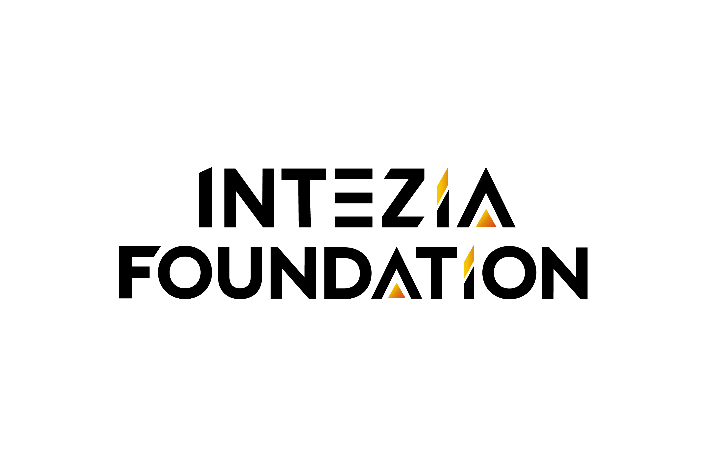

Charla gratuita · Servicio de Habilidades · Alianza City of Doral · 90 minutos
Cómo vender más
con IA en EE.UU.
Charla online gratuita de 90 minutos, para dueños y gerentes de empresa de Doral: cómo usar la inteligencia artificial generativa para vender más en el mercado de Estados Unidos, con herramientas gratuitas y casos aplicables al negocio, en alianza entre Intezia y City of Doral.
Vender hoy en Estados Unidos compite con negocios que ya usan IA para conseguir clientes.
La inteligencia artificial generativa ya cambió cómo los negocios consiguen clientes, escriben su marketing y responden más rápido, pero el acceso a una introducción clara y gratuita para dueños de negocio sigue siendo desigual. Esta charla abre esa puerta a los dueños y gerentes de empresa de Doral, sin costo y sin requisitos técnicos.
Diagnóstico
- La competencia en Estados Unidos ya usa IA para responder más rápido, generar contenido y llegar a más clientes.
- Hay decenas de herramientas gratuitas de IA para vender, pero poca orientación sobre cuál usar primero.
- Escribir anuncios, publicaciones y respuestas a clientes toma un tiempo que un dueño de negocio no siempre tiene.
- Vender en un mercado bilingüe como el de Estados Unidos exige contenido rápido y bien adaptado, algo que la IA puede acelerar.
- Sin una introducción clara, cada negocio prueba la IA por su cuenta, sin un criterio común de por dónde empezar.

CITY OF DORAL × INTEZIA FUNDACIÓN · CHARLA · CH-01402 · Objetivo
A dónde llevamos
a cada negocio en 90 minutos.
Objetivo general
Introducir a dueños y gerentes de empresa de Doral en el uso de la inteligencia artificial generativa para vender más, mediante herramientas gratuitas y casos aplicables a su negocio en el mercado de Estados Unidos, entregando un certificado de participación Intezia al cierre.
Objetivos específicos
- Distinguir qué es y qué no es la IA generativa, sin jerga técnica ni promesas exageradas.
- Usar al menos dos herramientas gratuitas de IA para tareas de venta: escribir anuncios, responder clientes o generar contenido para redes.
- Salir con un certificado de participación Intezia y una ruta clara para seguir aplicando IA en su negocio.
03 · Programa de la Charla
4 módulos · 90 minutos.
Acceso abierto y gratuito para dueños y gerentes de empresa de Doral
Qué es (y qué no es) la IA
Encuadre sin jerga técnica de qué es y qué no es la IA generativa, con ejemplos de negocios reales.
- 1.1 Mitos vs. usos reales
- 1.2 Cómo "piensa" un asistente
- 1.3 Lo que la IA no puede hacer
- 1.4 Primer contacto sin miedo
IA para vender más
Herramientas gratuitas para redactar anuncios, responder clientes y generar contenido que vende.
- 2.1 Anuncios y publicaciones que venden
- 2.2 Responder clientes más rápido
- 2.3 Ideas de contenido para redes
- 2.4 Casos reales de negocios en Doral
IA y el mercado de Estados Unidos
Cómo adaptar el mensaje de venta a un cliente bilingüe y fortalecer la presencia digital del negocio.
- 3.1 Contenido bilingüe con IA
- 3.2 Entender a tu cliente en EE.UU.
- 3.3 Presencia digital y reseñas
- 3.4 Qué esperan hoy los consumidores
Cierre y certificación
Repaso de lo aprendido y entrega del certificado de participación Intezia.
- 4.1 Requisitos de certificación
- 4.2 Certificado de participación Intezia
- 4.3 Ruta para seguir aplicando IA
- 4.4 Preguntas y cierre
04 · Agenda · 90 min
Desglose instructivo
módulo por módulo.
1.1-1.4
(apertura · mitos · primer contacto)
2.1-2.4
(anuncios · atención al cliente · contenido)
3.1-3.4
(contenido bilingüe · cliente en EE.UU. · reseñas)
4.1-4.4 · cierre + certificación
(requisitos · certificado · preguntas)
05 · Beneficios
Lo que se llevan.
Resultados
- Al menos 2 herramientas gratuitas de IA aplicadas a una tarea real de venta del negocio.
- Un mensaje o anuncio de venta ya redactado con IA, listo para usar.
- Un certificado de participación Intezia, sin pagar nada por él.
Por qué Habilidades
Habilidades convierte 90 minutos de charla en algo aplicable de inmediato: cada dueño de negocio sale con una tarea de venta ya resuelta con IA, no solo con una explicación teórica.
Entregables
Valor inmediato
06 · Impacto
La competencia ya vende
con IA.
Cómo adoptan la IA hoy los pequeños negocios en Estados Unidos
Fuente: U.S. Chamber of Commerce — Empowering Small Business Report (2025).
El 58% de los pequeños negocios en Estados Unidos ya usa IA generativa, casi el doble que en 2024 (U.S. Chamber of Commerce, 2025). El 91% de los que ya la usan reporta un aumento medible en sus ingresos, y el 77% prioriza marketing y atención al cliente como su área de aplicación (Salesforce, 2025). Para los negocios de Doral, la pregunta no es si la competencia ya usa IA para vender: es qué tan rápido empiezan ustedes también.
07 · Próximos pasos
Cómo arrancamos.
PR & Partnerships: Carolain Fernández · COO Intezia Foundation · cfernandez@intezia.com
Empresa: Intezia C.A J-505657950 · servicio@intezia.com